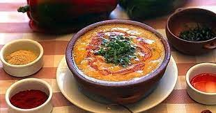

Locro
Locro: (del quechua ruqru o luqru) es una suerte de guiso a base de zapallo, porotos y maíz. En
Salta, se
lo prepara generalmente
con chorizo colorado, tocino, carne fresca y vísceras como la tripa gorda o el chinchulín de vacuno.
Opcionalmente se le adiciona
carne de cerdo, denominándolo como “locro pulsudo”.


Tamales
Tamal: (del náhuatl tamalli, que significa envuelto) es una comida de origen andino, preparada con
harina de
maíz,
envuelta y cocida en sus propias hojas (chala). En Salta es preparada con cebollas rehogadas en
grasa de
pella bien condimentada,
ají y carne vacuna, cerdo o charqui y se cocina en olla con agua hirviendo y sal.
Humitas
Humita en chala: humita o huminta (del quechua: jumint'a) es un alimento de origen andino; consiste
básicamente en una pasta o masa
de maíz (maíz molido, rallado o triturado) levemente condimentada, envuelta en las propias hojas
(chala)
y cocida en olla con agua
hirviendo y sal
Empanadas Salteñas
Empanada salteña: elaborada con carne magra argentina cortada a cuchillo, papa, ciboulette, huevo
duro,
morrón,
cebolla y condimentada con pimentón del valle, son cocidas en horno de barro o fritas en grasa de
pella,
al fuego y en
ollas de hierro o Caldero. Opcionalmente se le agregan arvejas